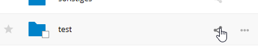

Anonimowe przesyłanie plików
Możesz tworzyć własne, specjalne katalogi do przesyłania, aby inne osoby mogły przesyłać do Ciebie pliki bez konieczności logowania się na serwerze i bez bycia użytkownikiem Nextcloud. Nie będą mogli przeglądać zawartości tego katalogu ani dokonywać żadnych zmian. Jest to doskonała alternatywa dla wysyłania dużych załączników pocztą elektroniczną, za pomocą serwera FTP lub korzystania z komercyjnych usług udostępniania plików.
Konfigurowanie upuszczania plików
Przejdź do Files (Pliki) i utwórz lub wybierz katalog, do którego powinno zostać anonimowe wysłanie:

Zaznacz Udostępnij link, Zezwól na edycję, Ukryj listę plików:

Teraz możesz ręcznie wysłać link do katalogu wysyłania lub za pomocą funkcji wysyłania Nextcloud, jeśli została ta funkcja włączona przez administratora.
Wysyłanie plików
Korzystanie z funkcji anonimowego wysyłania jest proste. Otrzymasz link do katalogu wysyłania, kliknij w link, a następnie zobaczysz stronę Nextcloud z przyciskiem „Kliknij, aby przesłać”:

Spowoduje to otwarcie selektora plików i wybranie pliku lub katalogu, który chcesz przesłać. Możesz także po prostu upuścić pliki w oknie.
Po zakończeniu wysłania wymienione są nazwy plików: